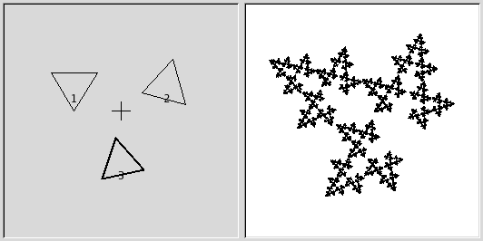
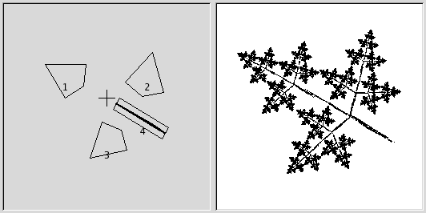

This fractal-based plug-in is truly wonderful! With this versatile instrument, you can create amazingly naturalistic organic shapes, like leaves, flowers, branches, or even whole trees. “IFS” stands for Iterated Function System.
The key to using this plug-in lies in making very small and precise movements in fractal space. The outcome is always hard to predict, and you have to be extremely careful when you change the pattern. If you make a component triangle too big, or if you move it too far (even ever so slightly), the preview screen will black out, or more commonly, you'll get stuck with a big shapeless particle cloud.
Uma conselho: Quando você encontrar um padrão próximo do que você quer obter, faça apenas pequenas mudanças, e fique com variações desse padrão. É muito fácil perder uma coisa boa. Ao contrário do que você pode acreditar, é realmente muito mais fácil criar uma folha ou uma árvore com o Fractal IFS do que criar um padrão geométrico definido (onde você realmente sabe o que está fazendo, até obter o padrão que você tinha em mente).

A interface do plug-in consiste de uma área de composição a esquerda, uma tela de pré-visualização a direita e algumas guias e botões de opção na parte inferior da janela. A configuração padrão (na área de pré-visualização) usar três triângulos equiláteros - que gera um Fractal conhecido como Triângulo de Sierpinski.
Barra de ferramentas
Clique nos botões da barra de ferramentas para utilizar as seguintes ferramentas, ou abra o menu de contexto da área de composição.
-
 Move
,
Move
,
 Rotate
,
Stretch
Rotate
,
Stretch
-
Selecione a ação a ser executada usando o ponteiro do mouse.
-
 New
,
New
,
 Delete
Delete
-
Adicione ou remova fractais.
- Undo , Redo
-
Padrão.
-
 Select All
Select All
-
Vincula os Fractais e permite que as ações e alterações sejam aplicadas a todos eles.
- Recompute Center
-
Recalcula o centro dos fractais. Isto não tem qualquer efeito visível no fractal resultante.
- Render Options
-
- Memória máxima
-
Enables you to speed up rendering time. This is especially useful when working with a large spot radius; just remember to use even multiples of the default value: 4096, 8192, 16384, …
- Iterações
-
Determina quantas vezes o fractal se repetirá. (Um valor muito alto para as operações de subdivisão e interações é, por razões óbvias um desperdício de tempo de processo, a menos que a sua imagem seja muito grande.)
- Subdividir
-
Controla o nível de detalhe.
- Raio das manchas
-
Determina a densidade das “pinceladas” na imagem renderizada. Um valor pequeno para o raio é bom para nuvens de partículas finas, tipo spray, enquanto que um valor maior para o raio produz traços grossos, similares a aquarela. Tenha cuidado para não usar raio de manchas muito grande — pode levar muito tempo para renderizar.
Transformação espacial
Dá a você informações sobre o componente ativo, e permite que você digite um valor em vez de mudá-lo manualmente. Alterar parâmetros com o mouse não é muito preciso, por isso, esta é uma opção útil quando você precisa ser mais exato, por exemplo, para aplicar pequenas variações a um fractal que esteja quase bom.
- X, Y, Escala:, Ângulo, Inclinar
-
Move, redimensionar ou inclina o componente ativo do fractal.
- Assimetria
-
Estica o componente ativo do fractal.
- Espelhar
-
Reflete o componente ativo do fractal.
Transformação de Cor

- Simples
-
Muda a cor do componente de fractal atualmente selecionado para uma cor de sua escolha. (o padrão é a cor de frente na caixa de ferramentas)
- Completo
-
Como a transformação de cor simples, mas desta vez você pode gerenciar a transformação de cor para cada canal de cor e para o canal alfa (mostrado como um canal em preto).
- Redimensionar matiz por, Redimensionar valor por
-
Quando você tem muitos fractais com cores diferentes, as cores misturam-se umas as outras. Assim, mesmo se você definir “vermelho” puro para um componente do fractal, ele pode se tornar azul em alguns lugares, enquanto outro componente vermelho acumular a cor amarela com as transformações. O redimensionamento de matiz/valor altera a força da cor do componente atual, ou seja, quanto influente este componente vai ser na composição geral do fractal.
Outro
- Probabilidade relativa
-
Determina influência ou impacto total de um determinado componente do fractal.
Este é um plug-in bastante complexo, por isso, para ajudar você a entendê-lo, vamos guiá-lo através de um exemplo onde você vai criar uma folha ou ramo.
Muitas formas de vida e, principalmente plantas, tem formas que podem ser representadas por fractais matemáticos, ou seja, uma forma que reproduz em escalas diferentes a sua forma básica, começando com a forma geral e descendo até os menores detalhes. Você pode facilmente reproduzir a forma de uma folha ou um ramo por meio de quatro (ou mais) componentes de fractal. Três componentes geram a forma da ponta e dos lados da folha, e o quarto representa a haste.
-
Before invoking the filter: Select → . Add a transparent layer with → . Set the foreground color in the toolbox to black, and set the background to white.
-
Abra o Fractal IFS. Comece pela rotação dos triângulos direito e inferior de modo que eles apontem para cima. Você vai agora ser capaz de ver o esboço do que virá a ser a ponta e os lados da folha. (Se você tiver problemas, pode ajudar saber que os três vértices de um triângulo desses não são equivalentes.)
Figura 17.349. Passo 2 do tutorial

Comece rotacionando os triângulos 2 e 3 tentando mantê-los aproximadamente do mesmo tamanho.
-
Para deixar a folha simétrica, ajuste o triângulo de baixo de forma que aponte ligeiramente para a esquerda, e o triângulo da direita apontar ligeiramente para a direita.
-
Pressione o botão para adicionar um componente à composição. Este vai ser a haste da folha, então precisamos torná-lo longo e fino. Pressione o botão e arraste para esticar o novo triângulo. Não se assuste se isso bagunçar demais a imagem, basta usar o controle de para ajustar o tamanho do triângulo longo demais. Provavelmente você também terá que mover e girar o novo componente de fractal para torná-lo convincente.
Figura 17.350. Passo 3 do tutorial

Adicione um quarto componente, em seguida, estique-o, mude sua escala e mová-o como mostrado.
-
Você ainda tem que tornar o fractal mais parecido com uma folha. Aumente o tamanho do triângulo superior, até que você ache que está espessa e frondosa o bastante. Ajuste todos os fractais até que esteja feliz com a forma. Use o botão direito do mouse para abrir o menu de contexto e escolha . Agora, todos os componentes estão selecionados, e você pode redimensionar e rotacionar a folha como um todo.
Figura 17.351. Passo 4 do tutorial

Aumente o componente 1, arrume os demais componentes de forma apropriada e então selecione tudo, redimensione e rotacione.
-
The final step is to adjust color. Click on the tab, and choose a different color for each fractal. To do this, check and press the right color square. A color wheel appears, where you can click or select to choose a color.
Figura 17.352. Passo 5 do tutorial
Atribua uma cor marrom-castanho ao componente 4, e vários tons de verde para os outros componentes.
-
Pressione OK para aplicar a imagem, e lá está: você acabou de criar uma folha fractal perfeita! Agora que você pegou o jeito, deve experimentar e fazer seus próprios projetos. Todos os fractais imitando plantas(sejam elas carvalhos, arbustos ou capim) são feitos mais ou menos dessa forma: folhas em torno de um tronco (ou várias hastes). Você apenas tem que girar de outra forma, esticar e aumentar um pouco ou adicionar mais alguns fractais para obter uma planta totalmente diferente.